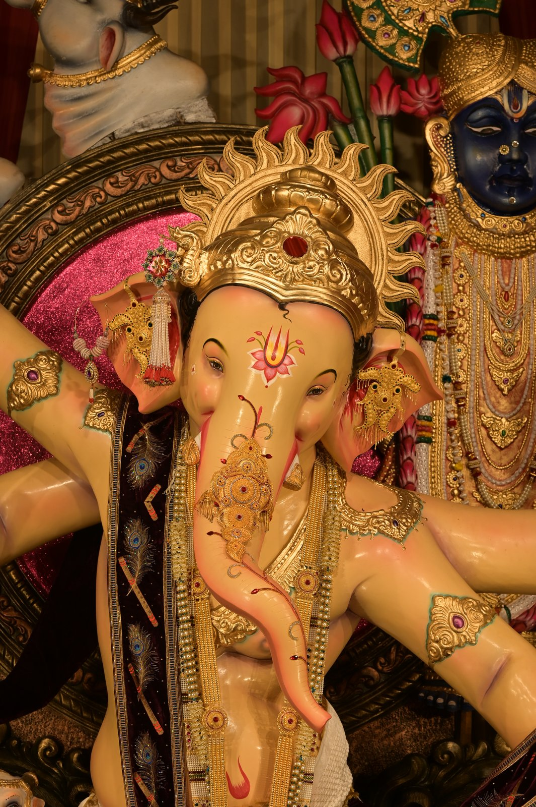

Fortcha Raja Ganpati Mandal

Established in 1962 and inspired by the ideals of Lokmanya Tilak, Fortcha Raja is among the cherished sarvajanik Ganpatis of South Mumbai. For over 65 years our Bappa has been loved for his serene, traditional form — and the mandal for its devotion and social seva, devotion over spectacle.
Know More →